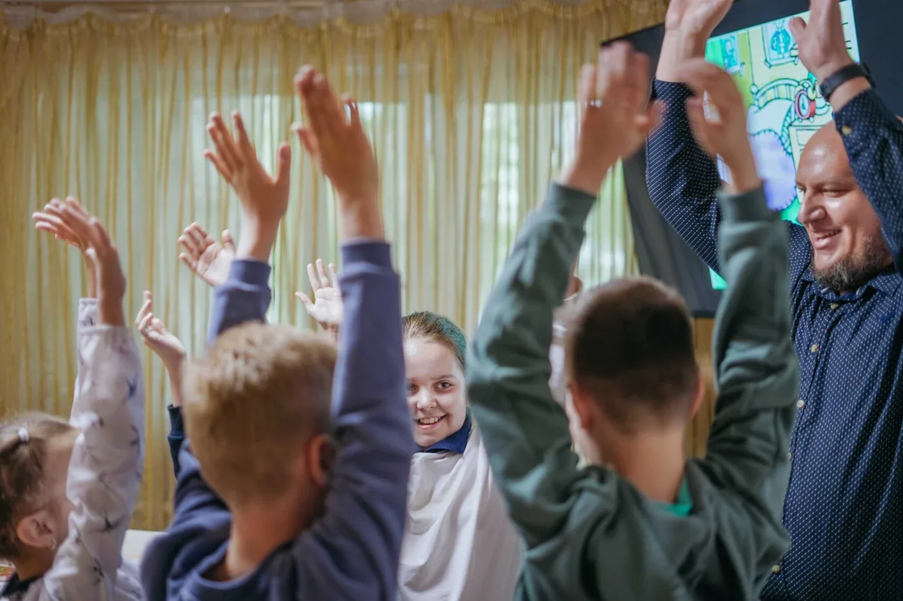
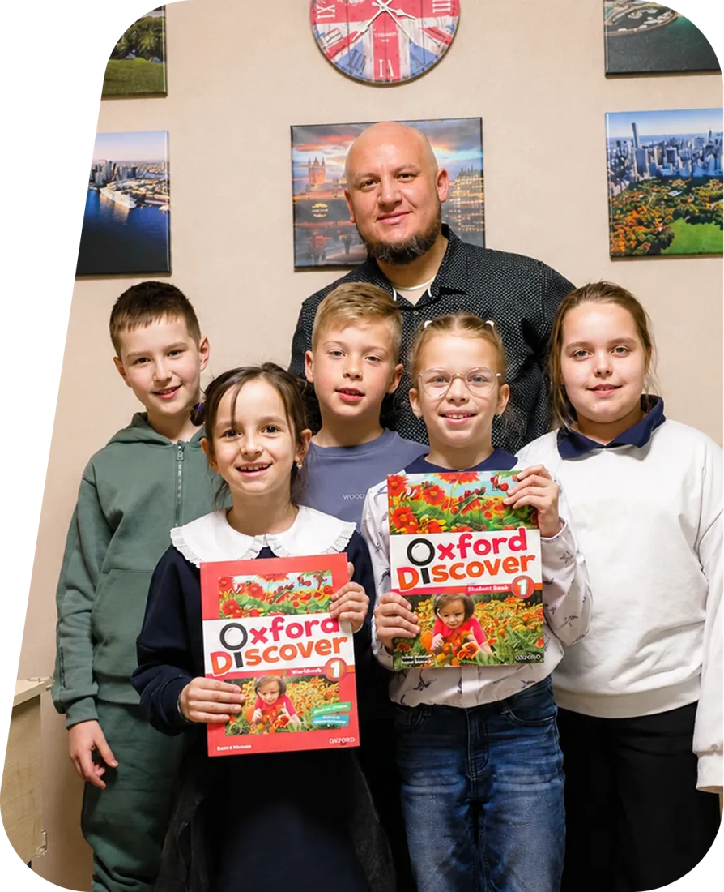
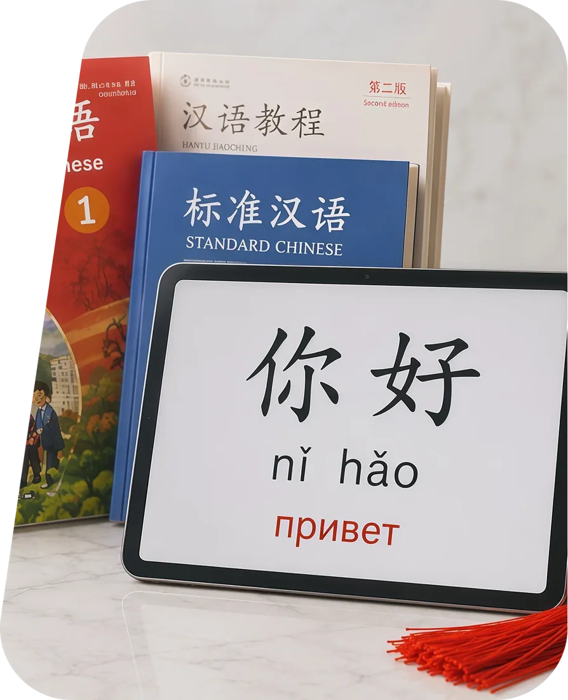

Больше, чем уроки. Живой язык.
Языковые занятия для детей. Выберите направление и посмотрите, как проходит урок.
Выбрать языкНаправления

Английский язык
Разговорная практика в группе, игры и совместные задания.

Китайский язык
Знакомство с иероглифами, звучанием слов и повседневными выражениями.